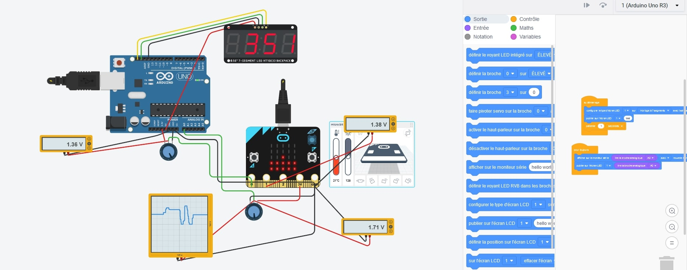
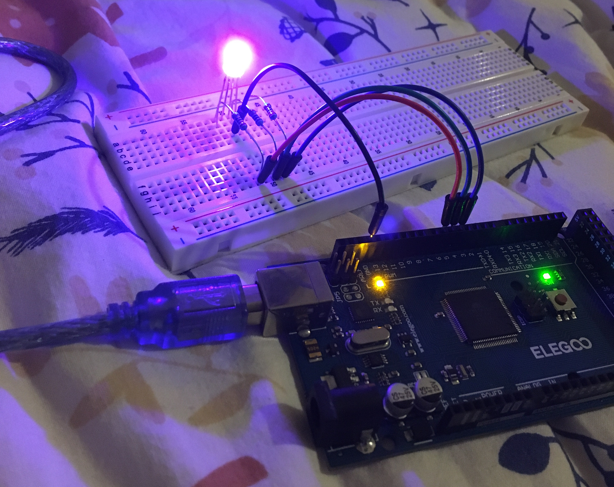
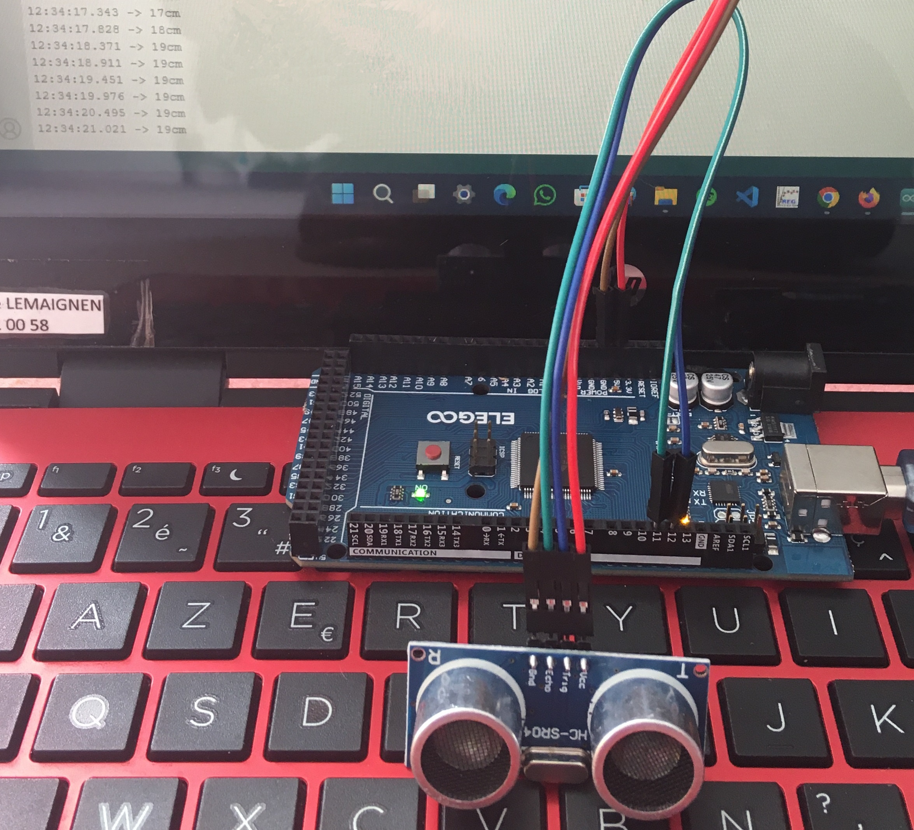

Mes Différents projets Arduino et circuit
Projet avec des circuit logique
 Projet avec tinkarcad : circuit électrique qui allume des leds avec 2 boutons a glissière, en utilisant 2 portes logique ' et ' et ' ou '.
Projet avec tinkarcad : circuit électrique qui allume des leds avec 2 boutons a glissière, en utilisant 2 portes logique ' et ' et ' ou '.
source du projet
Test de communication entre un Arduino et un Microbit

Projet avec tinkarcad : Test de communication entre un Arduino et un Microbit en utilisant les port analogique; Opération qui c'est vite retrouvé complique car l'Arduino marche avec 5V et le microbit 3V.
source du projet
Carte programmable Arduino (Elegoo )

Une led RGB programmer avec la carte.
Télémètre à ultrasons

Mesure de la distance avec un télémètre à ultrasons puis affichages du résultat sur la console de l'ordinateur.
Fabriquer un thermomètre
 Mesure de la température et de l'humidité, puis affichages des résultats sur l'écran LCD.
Mesure de la température et de l'humidité, puis affichages des résultats sur l'écran LCD.